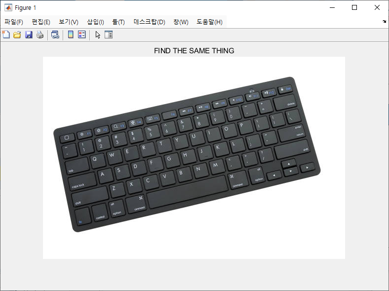

MATLAB Webcam Recognition Game


A small-scale MATLAB study project in RAIM that used webcam input and object recognition to build a simple find-the-same-object game.

A small-scale MATLAB study project in RAIM that used webcam input and object recognition to build a simple find-the-same-object game.